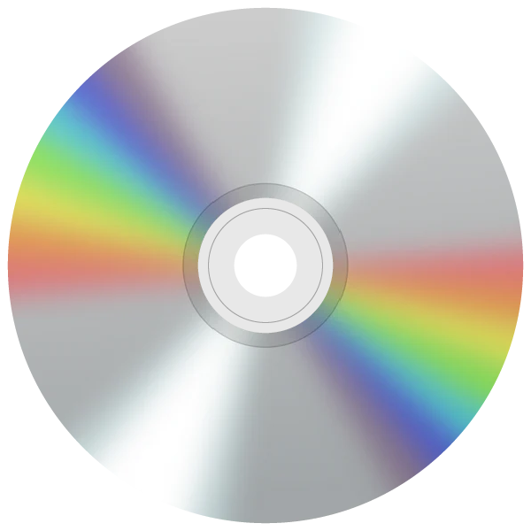
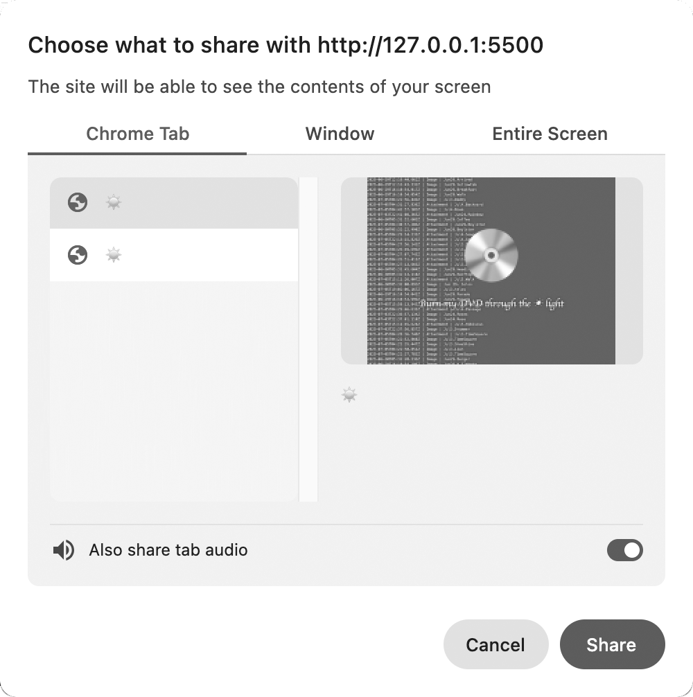

Burn My DVD uses the MediaRecorder API to record the music video and export it as a video file.
**
Click the Burn My DVD button in the middle of the website. When you click the spinning CD, a pop-up window will appear asking you to record your browser screen.

Select the Burn My DVD tab, then click Share. When the music video ends, the recording will stop automatically and the save dialog will appear.

**
The video file will be saved with a .webm extension. You can drag it into your web browser to play it. If you want to convert it to another video format, such as mp4, you can use an online converter.